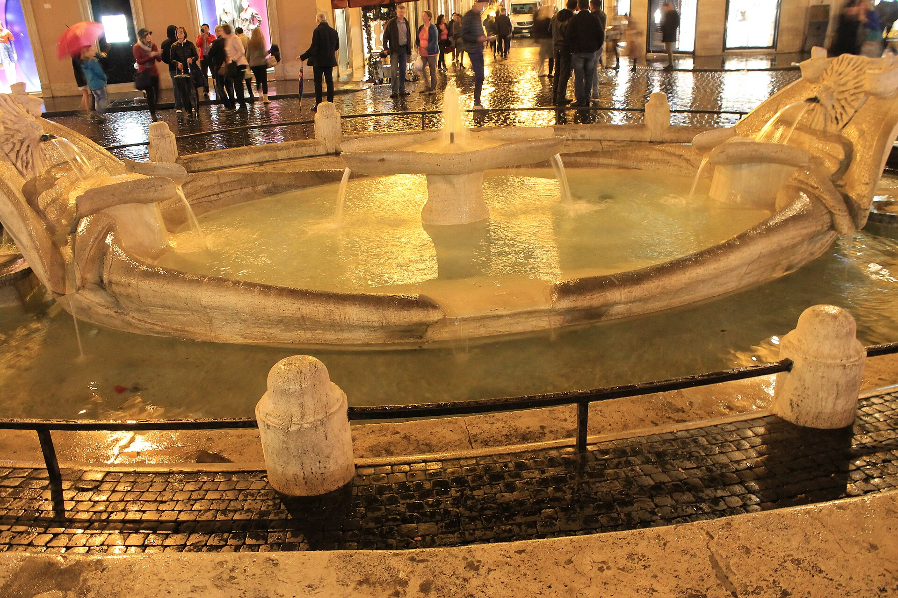
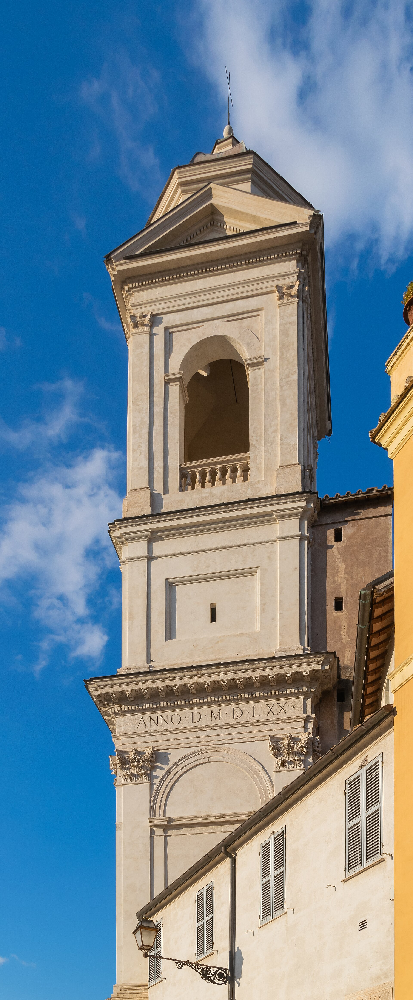
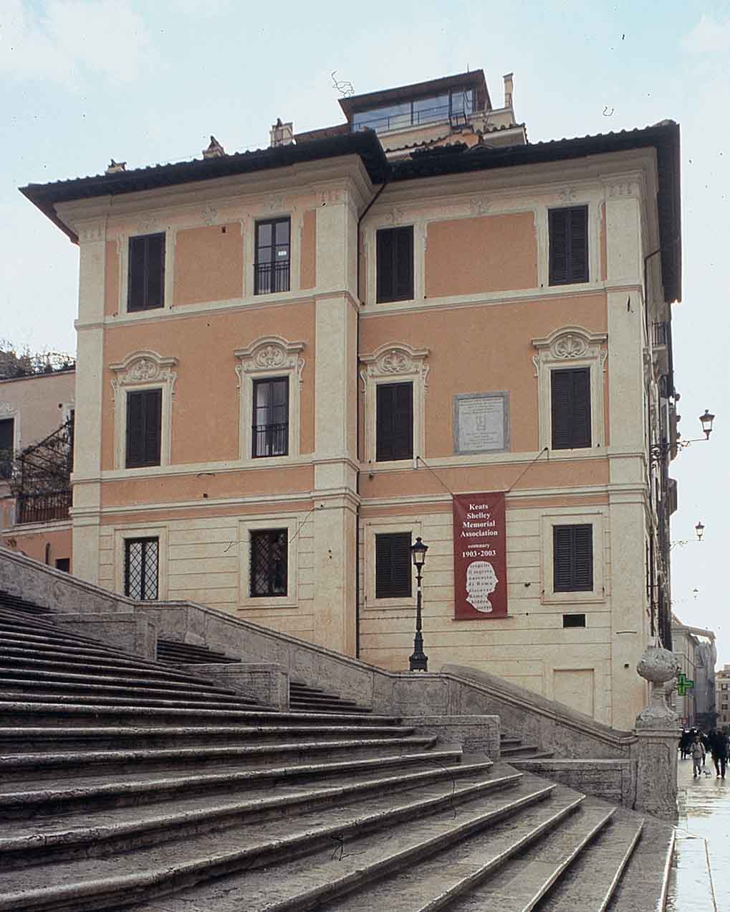

1723-1726 年建成的 137 级台阶，连接西班牙广场与法国教堂山上天主圣三堂。白天是全罗马最拥挤的“坐席”，傍晚是奢侈品街区的心脏——它还是英国浪漫主义诗人在罗马的伤心地标。
看点路线
Il Percorso
- 1台阶顶端：山上天主圣三堂与俯瞰罗马天际线的平台
- 2台阶下：贝尼尼父亲设计的破船喷泉
- 3右侧黄色小楼：济慈-雪莱纪念馆（Keats-Shelley House）
- 44-5 月杜鹃花展：台阶被花盆装点成花坛
周边看点
La Piazza di Spagna · 4 个细节

破船喷泉
一艘半沉的破船悠闲地“搁浅”在广场中央——水压不足的妥协方案被父子俩做成了罗马最幽默的喷泉。罗马之夏最清凉的画面：游客围着一条船吃冰淇淋。

山上天主圣三堂
台阶尽头的法国哥特双塔教堂（至今仍属法国）。门前方尖碑是罗马人从塞索斯特里斯方尖碑上“接”的仿古件——文艺复兴的罗马把古埃及风当装修风格，一装五百年。

济慈-雪莱纪念馆
台阶右侧的黄楼，济慈在二楼度过了人生最后三个月，年仅 25 岁。馆内藏有济慈与雪莱的手稿、拜伦的石膏面具。济慈的墓志铭没有名字，只有一句他自己定的：“这里躺着一个人，他的名字写在水上。”
康多提大道与古希腊咖啡馆
台阶正对的奢侈品街尽头，是 1760 年开业的 Caffè Greco——歌德、拜伦、司汤达、瓦格纳、李斯特都在这里赊过账。点一杯 Espresso 站在柜台喝 €1.5，坐下喝是另一个宇宙的价格。
历史故事
Le Storie
壹一座台阶的外交出身
“西班牙阶梯”其实是个错号：台阶属于法国（顶上的教堂是法国王室产业），脚下广场属于西班牙（使馆所在地），出资的是法国外交官的遗产--三方扯皮一个世纪，最后由法国出钱、教皇批准、设计师德·桑克蒂斯用 137 级台阶一次摆平。
设计的高明在于“不对称的优雅”：宽窄交替的平台、弧线收放，让直线爬升变成一场节拍游戏。
今天它仍是全罗马出镜率最高的“家具”：《罗马假日》里赫本舔冰淇淋、费里尼《甜蜜的生活》开场、伍迪·艾伦《爱在罗马》。
贰济慈的最后一个春天
1820 年 11 月，25 岁的济慈咳着血抵达罗马，医嘱是“暖冬续命”。他住在台阶右侧的黄色小楼里，窗外就是这 137 级台阶的声音。
三个月后他病逝于此。按防疫规定，房间内一切被焚烧。今天的纪念馆是后人按回忆复原的--书桌上摆着他最爱的但丁雕像复制品，与当年一模一样。
浪漫主义的一代在罗马格外命薄：雪莱次年溺亡，30 岁不到。两人如今都葬在罗马新教公墓。去台阶时抬头看那扇右二窗--英国诗歌的最后一间卧室。
叁四月的杜鹃花阶
每年 4 月中至 5 月初，台阶被上百盆杜鹃花装点成花坛--这是罗马市政府延续数十年的“春季开幕式”。粉色花毯铺在 137 级石阶上，花期只有三周。
花展的起源是 1950 年代的市政美化计划，如今与时装品牌的发布季重合：台阶变成花与时装的双重 T 台（Dolce & Gabbana 的多个广告在此拍摄）。
计划 4-5 月来罗马的，把日期往杜鹃花上靠：这是台阶一年中最上镜的三周。
肆破船的水压学
台阶下的破船喷泉出自贝尼尼之父彼得罗：因为广场的水压太低撑不起高喷，索性把水装进一条“搁浅的船”--低水压的设计缺陷被做成了罗马最幽默的喷泉。
1653 年贝尼尼曾参与改造船体。船身的进水与“漏水”都是刻意的：水位贴着船沿，刚好够映出台阶的倒影。
夏天孩子们围着船沿接水喝的画面两百年没变--这条“沉船”是全罗马最不慌不忙的泉。
伍1760 年的艺术家俱乐部
台阶正对的康多提大道尽头，是 1760 年开业的 Caffè Greco--歌德、拜伦、司汤达、瓦格纳、李斯特都在这里赊过账，账单据说至今还挂着几张（传说版本各异）。
19 世纪这里是“罗马大奖”画家们的英语角：北方的艺术家们在此交换订单、斗嘴与私奔计划。内部的红丝绒小间至今按老规矩分“作家位”与“画家位”。
站着喝 Espresso €1.5，坐下喝是另一个宇宙的价格--这家店的定价结构本身就是一件文物。
陆被蒙上的镜子
济慈纪念馆里有个细节：他房间的镜子被要求蒙上布。临终的他不想看见自己病容--诗人最后的自尊。
他在给朋友的信里写：“我已无所谓。”而他为自己写的墓志铭是：“这里躺着一个人，他的名字写在水上。”
纪念馆的橱窗里陈列着他写给芳妮·布劳恩的最后一封信，未寄出。台阶下每分钟有两百人拍照，楼上这一面蒙布的镜子，安静得像另一个星球。
柒禁坐令
2019 年夏，罗马市政府出台新规：禁止坐在台阶上，违者罚 €250。规则针对的是磨损与拥堵--每天数万人的“坐”让石阶边缘圆得越来越快。
禁令初期警察拿喇叭巡逻的视频传遍全网，游客们发明了“蹲”“靠”“半坐”等擦边姿势。如今执法温和了些，但高峰时段仍会清场。
台阶从“客厅”变成“景观”，罗马人自己也有争议。某种程度上，这是全世界过度旅游问题的一块试金石。
捌冰淇淋的禁令
《罗马假日》里赫本坐在台阶上舔 gelato 的镜头，是无数人来罗马的原始冲动--但那个画面如今违法：台阶上禁食（尤其是冰淇淋），违者罚款。
2023 年的整治进一步扩大到“不得在台阶上拖行李箱、不得赤上身”。管理方甚至在入口立了多语标识。
合法的复刻方案：在台阶对面的冰淇淋店买一支，站在广场上吃完，再上台阶--味道一样，法律风险为零。
玖法国教堂与方尖碑
台阶顶端的圣三教堂属法国（至今由法国圣体修会管理），立面前的方尖碑是罗马人在图密善时代造的“仿古埃及风”原装--古代的“埃及风装修”，比我们想象的早了一千五百年。
教堂内有两幅名作：沃尔泰拉的《下十字架》与达尼埃莱·达·沃尔泰拉（给米开朗基罗《最后的审判》穿裤子那位）的其他作品--免费，人少。
爬完 137 级的奖励除了全景，还有一间几乎没人的美术馆级教堂。多数人在最后十级放弃，转身拍照去了。
拾圣诞的马槽与冬天的台阶
12 月初，台阶下的西班牙广场会立起传统的圣诞马槽（presepe）与巨型圣诞树--这是罗马圣诞节开幕的官方信号。
圣诞马槽传统源于 13 世纪阿西西的方济各：用真人实物还原伯利恒马厩。罗马各教堂的马槽会在节期“内卷”评比，广场那座通常由不同地区承办，年年换风格。
冬夜里的台阶与马槽：游客少一半，灯串亮起，呼出的气是白的--这是 137 级台阶一年中最安静的季节。
参观贴士
Consigli Pratici
- 2019 年起禁止坐在台阶上，违者罚 €250——巡警与摄像头双岗
- 4 月中至 5 月初杜鹃花装点台阶，是一年中最上镜的时段
- 清晨 7 点前人少且顺光；傍晚 17-19 点人是风景的一部分，看你想要哪种
- 康多提大道奢侈品店与百年咖啡馆集中，-window shopping 免费
- 地铁 A 线 Spagna 站出口即广场，注意扒手（旺季重点区域）
顺路同游
Da Non Perdere